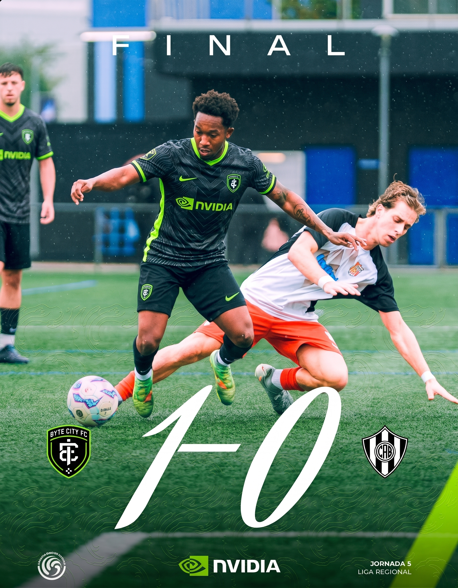

Club
Historia
Byte City FC nació como un proyecto futbolístico dentro del ciclo de Desarrollo de Aplicaciones Web. El club representa la unión entre tecnología, creatividad y pasión por el deporte.
Estadio
El equipo juega como local en el Estadio Bit Arena, situado en Ciudad Byte.
Calle del Algoritmo, 12 · 01100 Ciudad ByteAfición
La afición de Byte City FC respalda al equipo en cada partido, tanto en el Estadio Bit Arena como fuera de él.

Más de 12.500 socios activos forman parte de la comunidad del club.